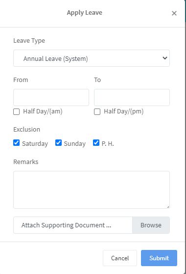
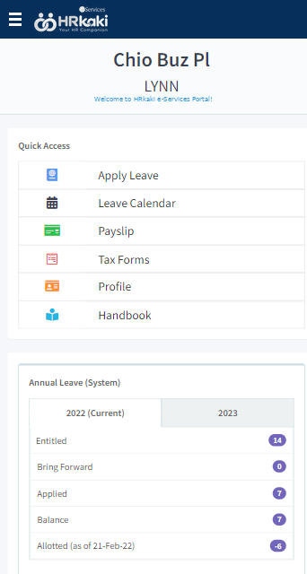
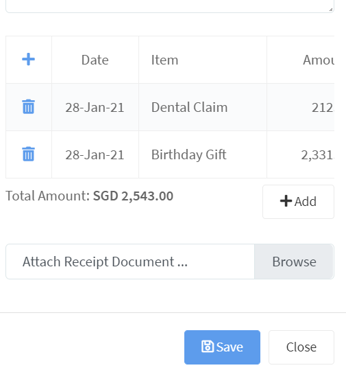
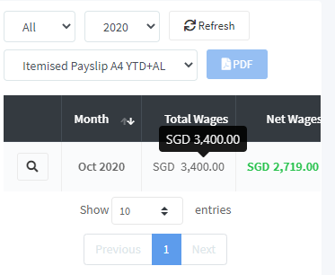
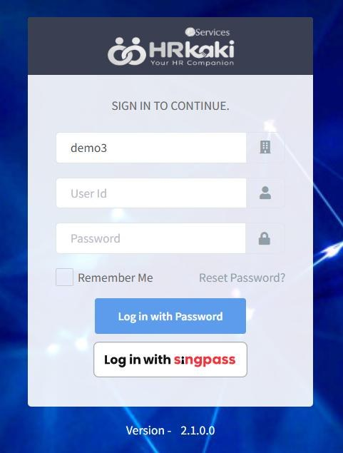

Apply for leave
Pick the leave type and dates, tick half day if needed, and attach a photo of the MC. Weekends and public holidays are left out automatically.
HRKaki e-Services lets your staff handle their own leave, claims and payslips. They sign in with Singpass from any phone, tablet or laptop. Managers approve from their inbox, and approved leave and claims flow straight into payroll.

Real screens from the HRKaki e-Services phone app. The web version has the same menus in a wider layout.

Pick the leave type and dates, tick half day if needed, and attach a photo of the MC. Weekends and public holidays are left out automatically.

Add each expense to one batch, snap the receipt with the phone camera, and see the remaining budget before submitting.

View any month's itemised payslip, download it as a PDF, and find year-end IRAS forms in the same menu.

No password or six-digit code to remember. Staff confirm with their face or fingerprint in the Singpass app.
Set a password and turn on two-factor sign-in from the welcome email. About 10 minutes, done once.
Install HRKaki e-Services from the App Store or Google Play, or use it in the phone's browser.
From then on, Singpass is the quickest way in. Password login stays available too.
Every leave or claim request can go through up to two levels of approval, and nobody has to chase anyone.
In most small HR teams, much of the week goes to routine questions: how much leave is left, can you resend my payslip, where is my IR8A. Self-service hands those answers to the employee. And because staff sign in with Singpass, the identity they already use for government services, forgotten-password tickets largely disappear.
Yes. Singpass login is built in: staff confirm with their face or fingerprint in the Singpass app, with no password or code to type. HR just needs the employee's NRIC or FIN on their record. Company ID, user ID and password login is also available.
Yes. HRKaki e-Services is free on the App Store and Google Play, published by Avelogic Pte Ltd. Staff who prefer not to install an app can use hrkaki.com/EServices in their phone's browser.
Each employee receives a welcome email. They do their first login on a computer to set a password and turn on two-factor sign-in, which takes about 10 minutes, then install the app and switch to Singpass.
They tap Reset Password? on the login screen to get a reset link by email, or simply log in with Singpass instead.
Yes. Approved claims can be reimbursed together with payroll, or paid separately, and you can set different claim budgets for different staff.
Up to two levels, with email notifications to the employee and each approver. Managers can approve from the app or the web portal.
Annual, sick, childcare, maternity, paternity and shared parental leave in Singapore for 2026, including the childcare leave changes announced at the 2026 National Day Rally.
Employment ActWho must issue itemised payslips in Singapore, the 12 items MOM requires, the 3-working-day deadline, record-keeping rules, overtime basics and penalties for non-compliance.
Tax & IRASWho must file IR8A under the IRAS Auto-Inclusion Scheme, the 1 March deadline, which forms you need (IR8S is discontinued), how to submit, IR21 for foreign employees, and the penalties.